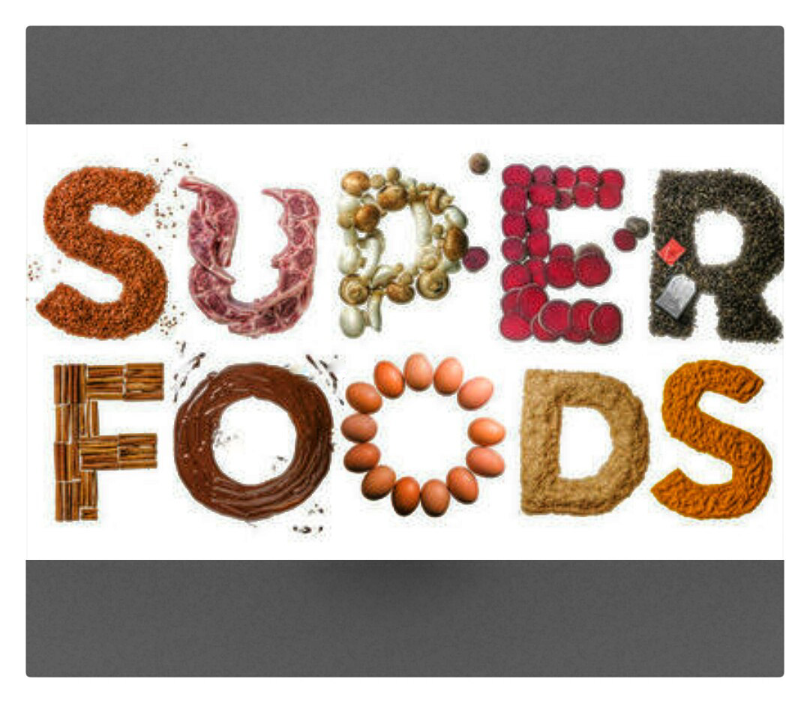
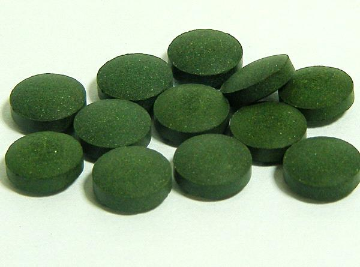

Marianna black version
Super Food
All you need to know.
macka is considered as one of the super food .
First of all, this design was originally made functionality and coding and .classes in the stylesheet. A fixed position site menu and some neutral images were also asked for.
info about Spirulina är
the main priorities
-

- Healthy facts
site info
© 2015 Marianna | Template design by Marianna